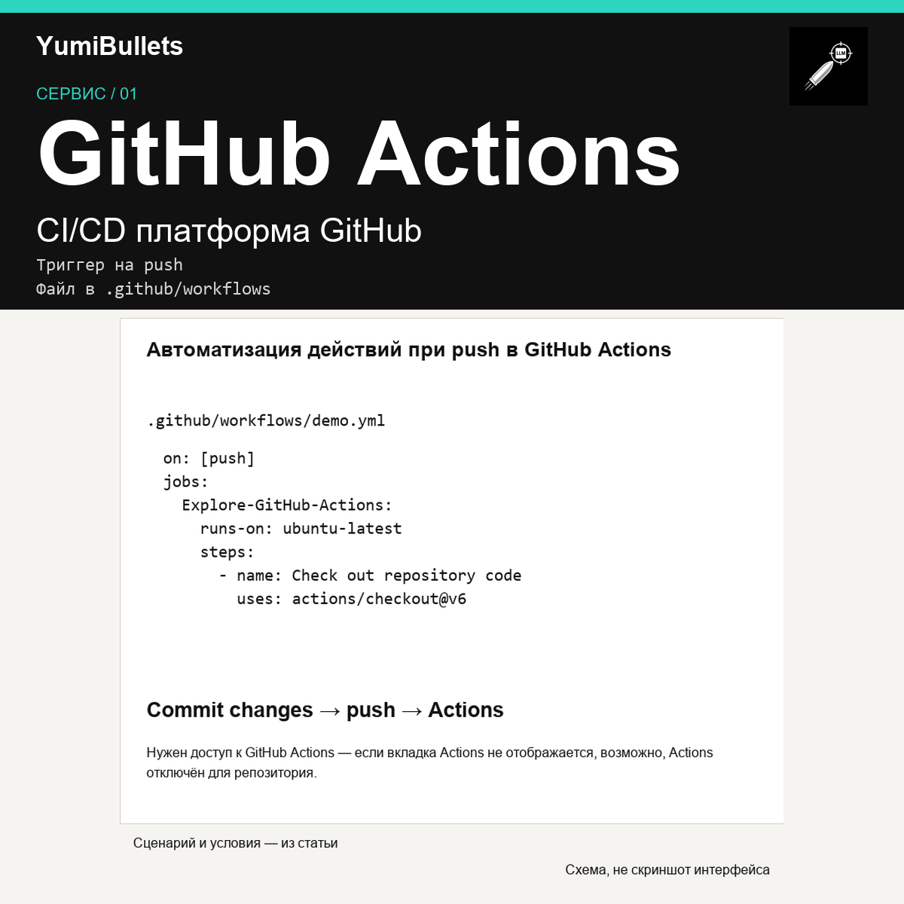

Автоматизация действий при push в GitHub Actions
Нужно запускать действия автоматически при каждом изменении в репозитории. GitHub Actions выполняет workflow при push.

Нужно запускать действия автоматически при каждом изменении в репозитории. GitHub Actions выполняет workflow при push.